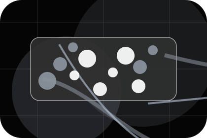
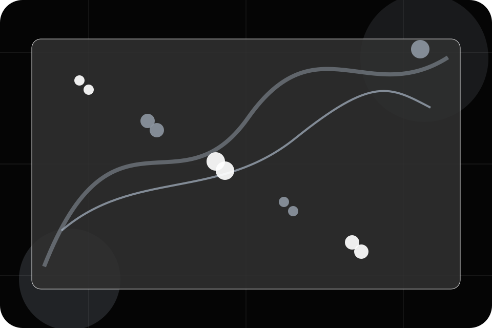
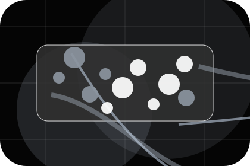
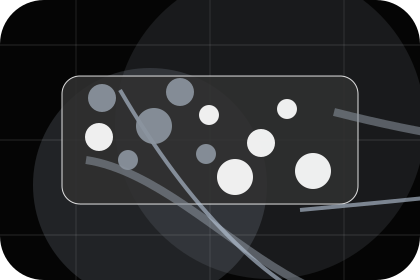
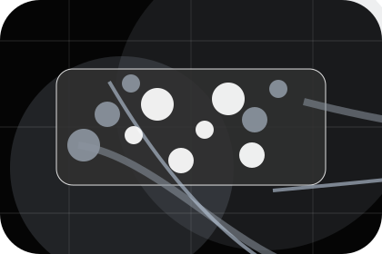
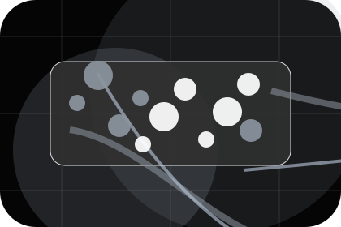
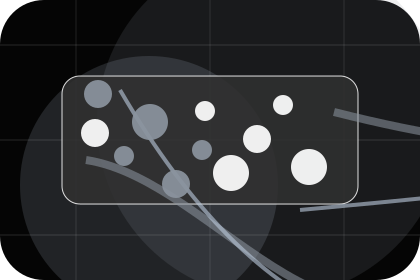
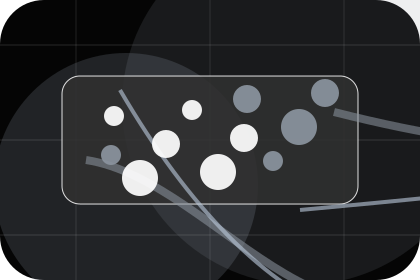
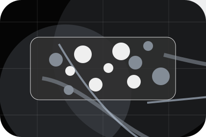
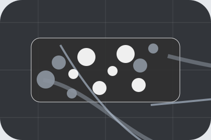

Context
Equipment gives the page a specific angle instead of repeating the navigation label.
Install / 01
Install opens as a clear telecommunications decision hub: what Signal offers, who it helps, why it matters, and which route to take first.
The first screen combines positioning, proof, primary action, and fast internal navigation, so people can act immediately or compare the rest of the install route with context.
Black full-bleed coverage hero
Select the closest route and Signal keeps the next step, proof, and follow-up expectation aligned with availability and reliability.

Install / 02
Booking makes the contact path concrete: what to send, how the response works, and what Signal needs before visitors check coverage.
The section reduces contact friction by naming the channel, expected detail, privacy path, and response expectation instead of dropping visitors into a generic form.
Check CoverageSignal keeps booking practical: send the key details, choose the right contact route, and know what kind of reply to expect.
Check CoverageBlack full-bleed coverage hero
Select the closest route and Signal keeps the next step, proof, and follow-up expectation aligned with availability and reliability.
Install / 03
Equipment adds professional context to the install route, using the space coverage landing structure to support availability and reliability before visitors choose a next step.
Signal uses satellite coverage cards and focused copy to make the decision easier to scan, aligning the section with availability and reliability rather than filling space.
Explore Install
Equipment gives the page a specific angle instead of repeating the navigation label.

The satellite coverage cards show what to compare, what to avoid, and what matters most for telecommunications, internet & connectivity visitors.

The final cue points to a useful internal route so the section keeps the journey moving.
Install / 04
Visit adds professional context to the install route, using the space coverage landing structure to support availability and reliability before visitors choose a next step.
Signal uses satellite coverage cards and focused copy to make the decision easier to scan, aligning the section with availability and reliability rather than filling space.
Explore InstallVisit gives the page a specific angle instead of repeating the navigation label.
The satellite coverage cards show what to compare, what to avoid, and what matters most for telecommunications, internet & connectivity visitors.
The final cue points to a useful internal route so the section keeps the journey moving.
Install / 05
Setup explains the operating sequence so visitors can see how the first request becomes a clear recommendation and follow-up.
The steps are written from the visitor side: what they do first, what Signal clarifies, what they receive, and how support continues.
Explore InstallHow visitors begin this route and what detail is useful at the first step.
What Signal reviews, filters, or explains before recommending the next move.
What the visitor receives afterward, including support, proof, or a handoff to the next page.
Install / 06
Activation adds professional context to the install route, using the space coverage landing structure to support availability and reliability before visitors choose a next step.
Signal uses satellite coverage cards and focused copy to make the decision easier to scan, aligning the section with availability and reliability rather than filling space.
Explore InstallActivation gives the page a specific angle instead of repeating the navigation label.
The satellite coverage cards show what to compare, what to avoid, and what matters most for telecommunications, internet & connectivity visitors.
The final cue points to a useful internal route so the section keeps the journey moving.
Install / 07
Testing explains the operating sequence so visitors can see how the first request becomes a clear recommendation and follow-up.
The steps are written from the visitor side: what they do first, what Signal clarifies, what they receive, and how support continues.
Explore Install

How visitors begin this route and what detail is useful at the first step.
Install / 08
WiFi adds professional context to the install route, using the space coverage landing structure to support availability and reliability before visitors choose a next step.
Signal uses satellite coverage cards and focused copy to make the decision easier to scan, aligning the section with availability and reliability rather than filling space.
Explore InstallWiFi gives the page a specific angle instead of repeating the navigation label.

The satellite coverage cards show what to compare, what to avoid, and what matters most for telecommunications, internet & connectivity visitors.

The final cue points to a useful internal route so the section keeps the journey moving.
Install / 09
Aftercare adds professional context to the install route, using the space coverage landing structure to support availability and reliability before visitors choose a next step.
Signal uses satellite coverage cards and focused copy to make the decision easier to scan, aligning the section with availability and reliability rather than filling space.
Explore InstallAftercare gives the page a specific angle instead of repeating the navigation label.
The satellite coverage cards show what to compare, what to avoid, and what matters most for telecommunications, internet & connectivity visitors.

The final cue points to a useful internal route so the section keeps the journey moving.
Install / 10
Signal closes the install route with a clear action, a quick reminder of the value, and a low-friction way to check coverage.
Visitors who are ready can use the primary action. Visitors who are still comparing can scan the section links, proof, and support routes before they check coverage.
Check CoverageThe final block keeps the choice simple: act now, compare one more proof route, or send enough detail for a focused response.
Check Coverageavailability and reliability
A coverage-first telecom site with stark dark hero, satellite-map panels, speed proof, and direct address checking. Install ends with a direct path to check coverage, plus enough context for visitors who still need to compare.

Check Coverage